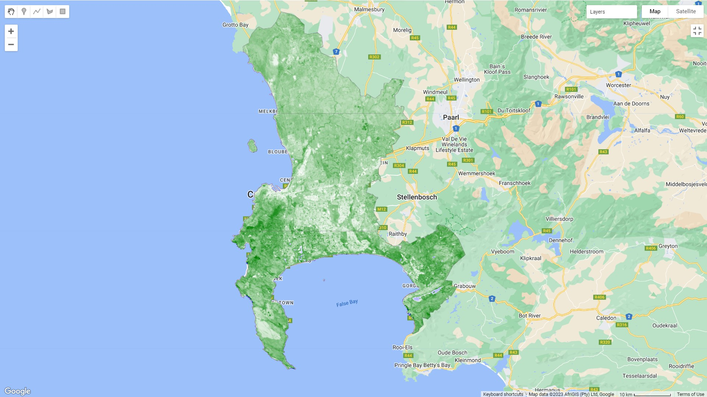
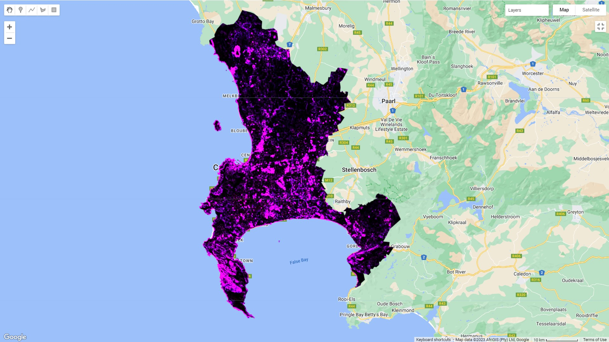
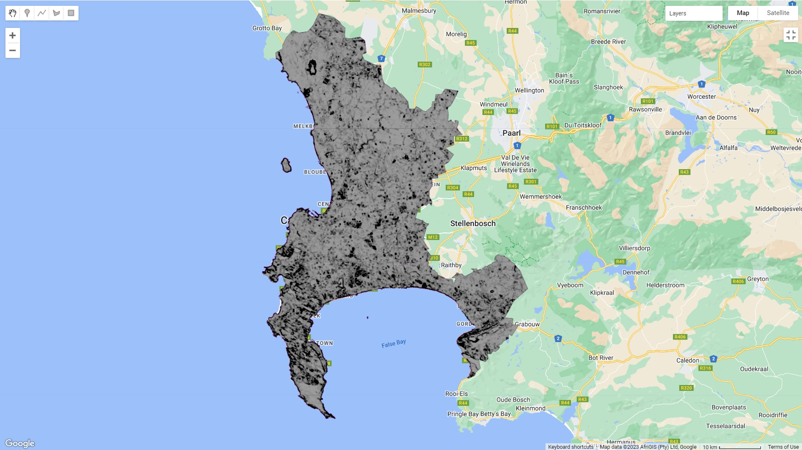
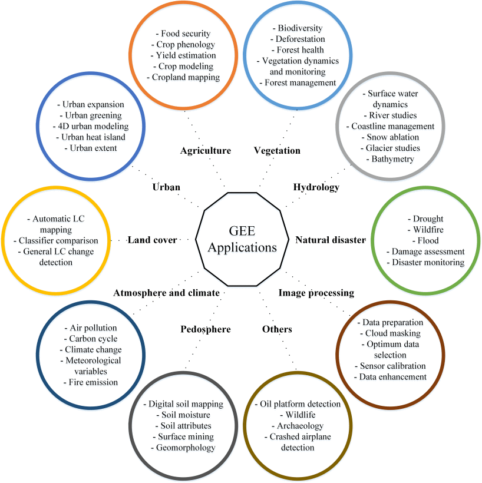

5 Week 5
6 Week 5: Google Earth Engine
6.1 Summary
This week we dived into Google Earth Engine, which has dramatically accelerated the field of remote sensing. I have to say that it was a relief to start using Earth Engine – I found the process of having to manually download and process images in SNAP or QGIS quite cumbersome and time-consuming. That’s the main advantage of Earth Engine: the fact that it dramatically reduces processing time and eases computational resources.
This week we covered “reducing” – essentially, aggregation functions to provide a particular value (such as the median) for each pixel, as well as linear regression and spatial joins. We also ran a few of the enhancement measures I discussed earlier, including PCA, which was eye-opening after week three when I ran PCA in R. This time, it ran in a few seconds.
Anyway, here’s the NDVI for Cape Town using landsat imagery from January 2022. I think that this has returned a better result than the NDVI measure I calculated in Week 3: Here, the highest values are on table mountain and in the mountainous area in the Southeast – these are nature reserves covered in indigenous fynbos vegetation. There’s also a scar visible in Cape Point, the Southwestern peninsula, from a fire that occurred at the peak of the drought in 2018:

And here is the GLCM texture measure from the same imagery – this looks to be highlighting high reflectance areas like industrial activity, informal areas, and that same scar from the fire:

And finally the first principal component from PCA:

The biggest takeaway from this was how quickly all of this ran – when I performed PCA in Week 3, I started the process and went out for a run because it was taking so long to finish. In Earth Engine, I ran all of the analyses above (NDVI, texture, and PCA) in a few minutes.
6.2 Applications
The applications for Google Earth Engine are really extensive. Earth Engine really changed things by making remote sensing analysis faster and more accessible (you don’t have to download huge amounts of data and then spend ages processing giant raster files). So the applications are not necessarily different to what was possible before, but it has really opened up the scale and creativity of analysis. This image below sums up the range of applications that are possible with Earth Engine:

Earth Engine has made planetary-scale analysis and monitoring of all sorts of phenomena possible. One example is Global Forest Watch, where you can easily view changes in tree cover for the entire planet at a range of temporal scales.
One area that I think is really interesting is the way Earth Engine has opened up the use of near real-time remotely sensed data. An example is Map of Life, which predicts the locations for habitats of endangered species using Earth Engine. The map is updated on-the-fly as new data comes in.
Sadly, an aspect of Earth Engine that is limited is that it’s not possible to use it for InSAR analysis of phase data. That’s quite frustrating, because I think it would be really interesting to use SAR phase data (which uses the change in a radio wave’s phase instead of amplitude) to monitor changes in height in informal settlements. There’s been a lot of informal vertical densification in Cape Town over the last few years, and using InSAR data to monitor the change in height over time would be an interesting way to understand and quantify the extent of this. That’s not to say it wouldn’t be possible to do this, but one would have to use SNAP or similar software in order to do it with phase data at the moment.
6.3 Reflections
Earth engine is really fun! I have to be honest and admit that I’ve been waiting most of the module to get into it. I like how easy to use it is, and the fact that you can get straight into working with analysis-ready data. I was worried about using Javascript at first, but the amount of Javascript you need is not too extensive, and there is a wealth of tutorials out there. There are some things that I find peculiar – like the fact that you can’t run code chunks and have to run the whole script every time – but I think that’s just part of learning and adapting.
It’s also strange how simple things like adding a legend turn out to be quite difficult in Earth Engine. It’s possible, but it involves a lot of extra work and an additional script for each legend, so I’ve left them out for my outputs in this learning diary (my apologies in advance for this).
I guess the biggest systemic risk with Earth Engine is that Google could decide to pull the product at any time. At the moment it seems too good to be true – it’s such a powerful service, and it’s completely free for individual users. That doesn’t seem like a sustainable business model for Google, and I suspect that it’s a matter of time before they start charging for access. Until then, I’ll continue to enjoy using it.